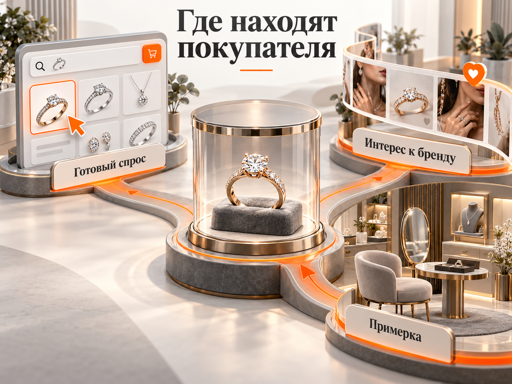
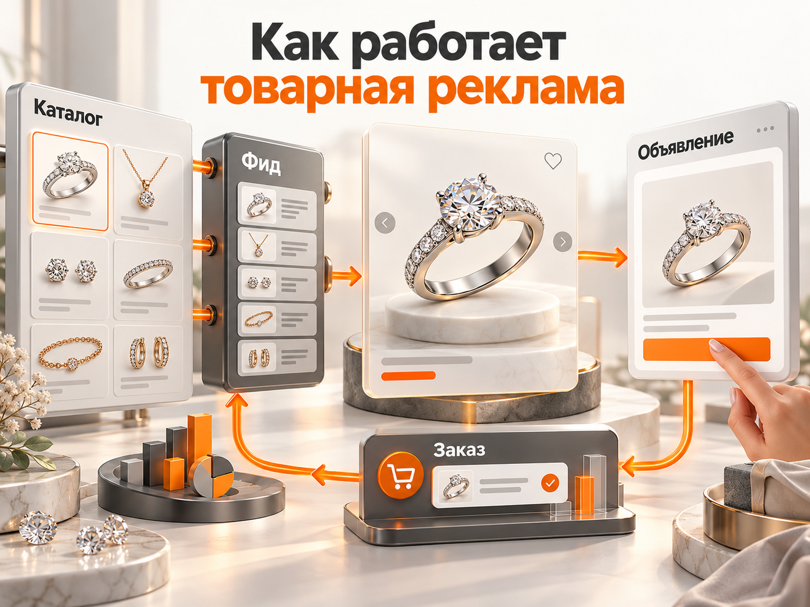
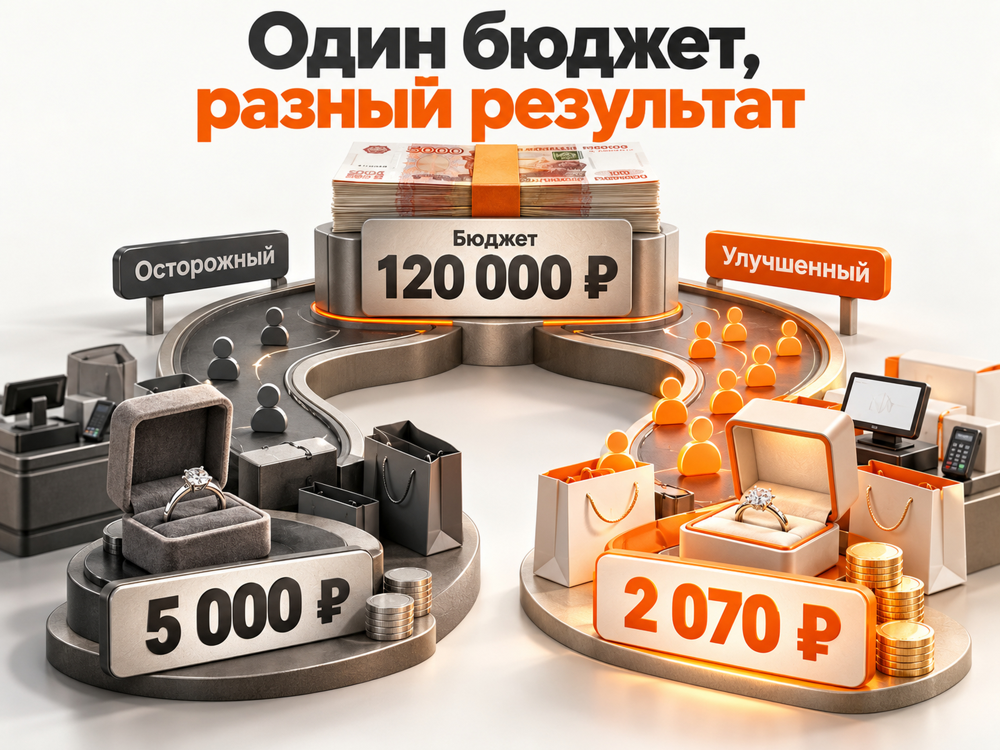

Блог о платном трафике
Продвижение ювелирного магазина в 2026 году: реклама, стоимость заказов и прогноз
Продвижение ювелирного магазина лучше начинать с каналов, где покупатель уже выбирает украшение: Яндекс Директа, поиска, товарных объявлений и маркетплейсов. Для офлайн-салона особенно важны Яндекс Карты. VK Реклама помогает знакомить аудиторию с брендом, а Авито стоит проверять как дополнительный канал, но не считать его гарантированным источником продаж.
Стоимость привлечения зависит прежде всего от среднего чека, маржинальности и того, что магазин считает заказом. В опубликованном проекте по продаже дорогих украшений удалось получить 464 оформленных заказа при CPA 7 097 ₽. В другом проекте, с авторскими украшениями и средним чеком около 12 000 ₽, доля рекламных расходов снизилась до 21%. Сравнивать эти показатели напрямую неправильно.
Ниже разберём рабочие инструменты, реальные результаты и расчёт бюджета для ювелирного интернет-магазина.
Что происходит на ювелирном рынке в 2026 году
По данным аналитического центра Sokolov, объём российского рынка ювелирной розницы по итогам 2025 года составил 493,3 млрд ₽. Рост к предыдущему году достиг 7,3%, средний чек увеличился до 10 075 ₽, а доля онлайн-продаж достигла 29%.
Но есть важная деталь. Федеральная пробирная палата зафиксировала снижение количества проданных золотых изделий на 8,7% за 2025 год.
Получается, что оборот в рублях растёт, а количество проданных золотых украшений сокращается. На динамику оборота влияет в том числе удорожание драгоценных металлов.
Для рекламы это означает три вещи:
- Нельзя оценивать спрос только по росту денежного оборота рынка.
- Покупателю нужно убедительно объяснять стоимость украшения, происхождение материалов и преимущества магазина.
- Бюджет необходимо планировать отдельно для недорогих украшений, изделий среднего сегмента и дорогой ювелирной продукции.
Среднерыночный чек 10 075 ₽ не подходит для расчёта экономики конкретного магазина с изделиями стоимостью 100 000‑200 000 ₽.
Какие рекламные каналы подходят ювелирному магазину
Эффективность площадки зависит от модели продаж. Интернет-магазину с большим каталогом нужны одни инструменты, локальному салону с примеркой другие, а производителю авторских украшений третьи.
| Канал | Для каких задач подходит | Приоритет |
|---|---|---|
| Яндекс Директ | Продажа украшений по сформированному спросу, реклама каталога, ретаргетинг | Высокий |
| Яндекс Карты | Визиты в салон, звонки, поиск магазина рядом | Высокий для офлайна |
| Ozon и Wildberries | Массовые товары, серебро, серийный ассортимент | Высокий при подходящей экономике |
| VK Реклама | Знакомство с брендом, продвижение коллекций, обращения в сообщения | Средний |
| Авито | Проверка спроса на отдельные изделия и локальные предложения | Тестовый |
| SEO | Продажи из органического поиска и долгосрочное продвижение каталога | Высокий в долгосрочной перспективе |
| Telegram | Работа с существующей аудиторией, новинки, повторные покупки | Дополнительный |

Не стоит одновременно запускать все площадки при ограниченном бюджете. Лучше выбрать один основной канал привлечения покупателей, правильно настроить аналитику и только после этого расширять рекламную систему.
Яндекс Директ для ювелирного магазина: что запускать
Для интернет-магазина с каталогом Яндекс Директ позволяет работать и со сформированным спросом, и с людьми, которые ранее интересовались конкретными украшениями.
Основные инструменты: поисковая реклама, товарные объявления, ретаргетинг и РСЯ. При наличии офлайн-салона дополнительно стоит использовать географические возможности Яндекса.
Поисковая реклама по коммерческим запросам
На Поиске прежде всего нужны запросы, в которых человек уже обозначил предмет покупки.
Примеры:
- купить золотые серьги 585 пробы;
- кольцо с бриллиантом купить;
- серебряная цепочка мужская;
- обручальные кольца Москва;
- золотой браслет женский цена;
- помолвочное кольцо с бриллиантом.
Объявление должно вести на соответствующую категорию или конкретный товар. Если посетитель ищет золотые серьги с определённой вставкой, не нужно отправлять его на главную страницу со всем каталогом.
Отдельно стоит проработать подарочные запросы. Например, «серьги в подарок жене» или «золотой браслет на годовщину». Здесь важны подборки с понятными ценовыми диапазонами и сроками доставки.
В первые недели необходимо проверять отчёт поисковых запросов. Для магазина, который только продаёт готовые украшения, могут оказаться нецелевыми запросы о ремонте, скупке золота, ломбардах, работе ювелиром и изготовлении изделий на заказ.
Исключать их следует с учётом фактического ассортимента, а не единым универсальным списком.
Товарная кампания и рекламный фид
Для магазина с большим ассортиментом товарная реклама особенно интересна, потому что позволяет показывать конкретные изделия с фотографиями и ценами.
Для запуска нужно подготовить товарный фид. В нём передаются сведения о товарах: название, идентификатор, цена, изображение, ссылка на карточку, наличие и другие параметры.
В случае ювелирного магазина важно передавать актуальную информацию о металле, пробе, вставках, размерах и наличии изделия.
Если товар закончился или изменилась его цена, сведения должны своевременно обновляться. Иначе реклама приведёт покупателя на карточку, где он не сможет оформить заказ на ожидаемых условиях.
Дополнительно следует настроить электронную коммерцию в Яндекс Метрике. Она позволяет передавать сведения о просмотре товара, добавлении в корзину и оформлении покупки.
В одном опубликованном ювелирном проекте отдельно исправляли несовпадение идентификаторов товаров в рекламном фиде и событиях электронной коммерции. После исправления стало возможно корректно использовать ретаргетинг на ранее просмотренные изделия.

Технические детали настройки товарных объявлений разобраны в материале «Товарная кампания Яндекс Директ».
Брендовая реклама
Если магазин уже известен и люди ищут его по названию, стоит проверить поисковую выдачу по брендовым запросам.
В некоторых случаях по таким запросам рекламируются конкуренты. Собственная брендовая кампания позволяет магазину дополнительно бороться за этот сформированный спрос.
Однако не нужно считать все брендовые конверсии дополнительными продажами, которых без рекламы не было бы. Часть покупателей могла перейти на сайт из органической выдачи.
Эффективность брендовой кампании полезно оценивать отдельно от рекламы по общим товарным запросам.
РСЯ и ретаргетинг
РСЯ позволяет показывать изображения украшений за пределами поисковой выдачи. Но широкая аудитория, заинтересовавшаяся красивой фотографией, не обязательно готова покупать.
Поэтому при ограниченном бюджете сначала разумно проверить ретаргетинг:
- просмотренные карточки изделий;
- добавления в корзину без покупки;
- посещения определённых товарных категорий;
- посетителей, которые взаимодействовали с сайтом, но не оформили заказ.
Для дорогих украшений можно тестировать более продолжительные периоды возврата аудитории, поскольку решение о покупке может приниматься не сразу.
Самостоятельные кампании на холодную аудиторию РСЯ лучше оценивать отдельно. Большое количество дешёвых кликов ещё не означает выгодную стоимость покупки.
VK Реклама: когда стоит использовать
VK Реклама особенно интересна ювелирным брендам с выразительными изделиями, качественными фотографиями и понятным позиционированием.
В отличие от Поиска, здесь покупатель может увидеть украшение до того, как начал целенаправленно его искать.
Для рекламы подходят:
- короткие видео с демонстрацией украшения на человеке;
- макросъёмка камней, застёжек и деталей;
- подборки подарков;
- истории авторских коллекций;
- реклама с переходом в сообщения сообщества.
В опубликованном в мае 2026 года кейсе ювелирного бренда стоимость подписчика в наиболее успешную из приведённых недель составляла 25,14 ₽. Одновременно росла активность сообщества.
Но 25 ₽ за подписчика не означает 25 ₽ за покупателя. Для оценки коммерческой эффективности необходимо отслеживать, сколько новых подписчиков позднее обращаются в магазин и совершают покупки.
Для дорогих изделий имеет смысл тестировать обращения в сообщения, где консультант помогает выбрать украшение, рассказывает о камнях, размере и примерке.
VK я бы рассматривал как второй рекламный канал после проверки экономики сформированного спроса, если у магазина нет уже действующей системы продаж через сообщество.
Авито: подходит ли для продвижения ювелирного магазина
Авито можно тестировать для продажи отдельных украшений, локального ассортимента и некоторых авторских изделий. Однако переносить на него весь бюджет ювелирного интернет-магазина без проверки спроса рискованно.
Важно различать два инструмента.
Товарные объявления на Авито размещаются в каталоге площадки и помогают находить покупателей, которые просматривают предложения продавцов. Условия размещения и возможность продажи конкретной категории изделий нужно проверять по действующим правилам платформы.
Авито ADS представляет собой рекламное размещение, которое может вести посетителя на внешний сайт. Такая реклама не равнозначна продвижению карточек внутри каталога.
Есть показательный отрицательный пример. В опубликованном тесте Авито ADS для ювелирного интернет-магазина за полтора месяца получили:
| Показатель | Результат |
|---|---|
| Расход | 76 100 ₽ |
| Показы | 2,5 млн |
| Клики | 6 881 |
| Средний CPC | около 11 ₽ |
| Заявки и покупки, зафиксированные на сайте | 0 |
При этом Яндекс Директ на том же сайте в период тестирования принёс 20 покупок.
Вывод не в том, что Авито вообще не работает в ювелирной нише. Этот пример показывает, что дешёвый рекламный трафик без покупок не представляет коммерческой ценности. Он также ничего не доказывает об эффективности товарных объявлений Авито, поскольку тестировался другой инструмент.
Для ювелирного магазина Авито следует проверять небольшим отдельным тестом с обязательным учётом обращений и продаж.
Маркетплейсы, Яндекс Карты и SEO
Для серийных украшений массового и среднего ценового сегмента Ozon и Wildberries могут стать существенным источником продаж. Но экономику нужно считать с учётом комиссии площадки, логистики, хранения, продвижения и других расходов.
Маркетплейс особенно полезен, когда товары легко сравнить по характеристикам, у магазина конкурентная цена и достаточный ассортимент.
Для дорогих авторских изделий продажа через собственный сайт и консультацию может оказаться подходящей моделью, поскольку позволяет подробнее раскрыть ценность украшения и работать с клиентом индивидуально.
Если у магазина есть физический салон, необходимо оформить и регулярно обновлять карточку организации в Яндекс Картах. В ней должны быть адрес, режим работы, фотографии, актуальные контакты и отзывы. Для локального спроса вроде «ювелирный магазин рядом» это особенно важно.
SEO стоит развивать параллельно с платной рекламой. Начинать лучше с коммерческих категорий: обручальных колец, золотых серёг, браслетов, украшений с конкретными вставками и других реально представленных товаров. Полезные статьи о выборе размера, пробы или камня дополняют каталог, но не заменяют коммерческие страницы.
Реальные показатели продвижения ювелирных магазинов
Публичные кейсы показывают, насколько различается экономика рекламы в зависимости от ассортимента и стоимости изделий.
Дорогие украшения: 464 оформленных заказа при CPA 7 097 ₽
В одном ювелирном интернет-магазине со средним чеком около 120 000 ₽ рекламный бюджет составлял примерно 500 000 ₽ в месяц.
До переработки рекламных кампаний он был распределён между 23 кампаниями, а брендовая поисковая реклама отсутствовала.
После аудита и изменений были внедрены:
- брендовая поисковая кампания;
- обновлённая система целей и коллтрекинг;
- товарный фид и электронная коммерция;
- ретаргетинг на просмотренные изделия;
- перераспределение бюджета между рекламными инструментами.
За период, обозначенный в опубликованном кейсе как шесть месяцев, было зарегистрировано 464 конверсии при среднем CPA 7 097 ₽ и расходах около 3,29 млн ₽. В качестве результата также приводится рост месячного количества оформлений с 3 до 50.
Брендовая кампания дала CPA 4 037 ₽, товарная реклама в Москве 6 826 ₽. Тест широкой РСЯ с похожими аудиториями оказался существенно дороже: 35 214 ₽ за конверсию, поэтому от этой гипотезы отказались.
Важное уточнение: в кейсе речь идёт об оформленных заказах, а не обо всех фактически выкупленных украшениях. При продаже дорогих изделий клиент может заказать несколько вариантов на примерку и приобрести только один.
Следовательно, опубликованный CPA нельзя автоматически считать окончательной стоимостью привлечения оплаченной продажи.
Авторские украшения: снижение ДРР до 21%
В опубликованном в декабре 2025 года кейсе бренда авторских украшений со средним чеком около 12 000 ₽ после запуска Яндекс Директа доля рекламных расходов первоначально составляла 29%.
После оптимизации товарных кампаний, брендовой рекламы и ретаргетинга показатель снизился до 21%. Количество продаж увеличилось с 33 до 35, а выручка во втором месяце выросла на 8%.
Этот пример показывает, что для магазина с меньшим средним чеком полезно оценивать не только CPA, но и долю рекламных расходов в выручке.
При этом 21% нельзя считать нормативом для всей ювелирной отрасли. У разных магазинов отличаются наценка, себестоимость, расходы на обслуживание и прибыль с продажи.
Сколько стоит реклама ювелирного магазина: расчёт бюджета и заказов
Единой среднерыночной стоимости заказа для всех ювелирных магазинов нет. Рассчитывать рекламный бюджет нужно от предполагаемой цены клика, конверсии сайта и допустимой стоимости фактически оплаченной покупки.
Рассмотрим интернет-магазин с рекламным бюджетом 120 000 ₽ в месяц. Это сумма для иллюстрации расчёта, а не обязательный или минимальный бюджет рынка.
Сравним два варианта результатов при разных показателях рекламы и сайта.
| Показатель | Осторожный вариант | Улучшенный вариант |
|---|---|---|
| Рекламный бюджет | 120 000 ₽ | 120 000 ₽ |
| Цена клика | 40 ₽ | 25 ₽ |
| Прогноз кликов | 3 000 | 4 800 |
| Конверсия клика в оформление | 1% | 1,5% |
| Оформленные заказы | 30 | 72 |
| Доля фактического выкупа | 80% | 80% |
| Оплаченные продажи | 24 | около 58 |
| CPA оформления | 4 000 ₽ | 1 667 ₽ |
| CAC оплаченной продажи | 5 000 ₽ | около 2 070 ₽ |
Все показатели цены клика, конверсии и выкупа в этой таблице являются расчётными допущениями, а не установленными средними значениями ювелирного рынка.
При одинаковом бюджете в 120 000 ₽ стоимость фактической продажи меняется с 5 000 ₽ примерно до 2 070 ₽. Это происходит одновременно за счёт снижения цены клика и повышения конверсии сайта.

Реальный результат может быть хуже обоих вариантов. Для дорогих изделий конверсия в оплаченную покупку может быть значительно ниже, а цикл сделки длиннее.
Перед запуском необходимо уточнить стоимость клика по конкретной семантике и регионам в прогнозе Яндекс Директа. Затем нужно проверить фактические показатели тестовой кампании.
Какую стоимость привлечения покупателя может позволить себе магазин
Допустимая стоимость привлечения зависит не от среднего CPA конкурентов, а от экономики собственного товара.
Возьмём условный ювелирный интернет-магазин со следующими показателями:
- средний оплаченный заказ: 15 000 ₽;
- доля выручки, остающаяся после закупки или изготовления товара и переменных расходов, но до рекламы: 35%;
- сумма до вычета рекламы с одной продажи: 5 250 ₽;
- желаемый остаток после рекламы: 2 250 ₽.
Тогда максимально допустимая стоимость привлечения оплаченной продажи составляет:
5 250 - 2 250 = 3 000 ₽.
При стоимости покупки 5 000 ₽ рекламная модель практически исчерпывает вклад этой продажи: остаётся всего 250 ₽ до покрытия постоянных расходов.
При CAC 2 070 ₽ остаётся около 3 180 ₽.
Это упрощённая модель. В реальном бизнесе нужно дополнительно учитывать налоги, постоянные расходы и особенности учёта себестоимости. Необходимо также различать выкуп товара и оформление заказа на примерку.
Для дорогих изделий допустимый CAC может быть выше, но только если это подтверждается фактической маржой.
Например, при оплаченной покупке на 120 000 ₽ и условном вкладе до рекламы 25% магазин получает 30 000 ₽ до рекламных затрат. При CAC 12 000 ₽ остаётся 18 000 ₽ на покрытие постоянных расходов и прибыль.
Использовать показатель 7 097 ₽ из чужого кейса как целевой CPA для недорогого серебряного украшения было бы ошибкой.
Как подготовить сайт ювелирного магазина к рекламе
Качественная рекламная кампания не исправит ситуацию, если посетитель не доверяет магазину или не получает информации, необходимой для покупки.
В ювелирной нише особенно важно показать реальный товар и подтвердить его характеристики.
Карточка изделия должна содержать качественные фотографии с разных ракурсов, изображения украшения на человеке, цену, материал, пробу, вес, тип вставки, доступные размеры и наличие.
Для дорогих изделий полезны крупные фотографии камня, видео при естественном освещении, описание характеристик вставок и возможность консультации.
Покупателю необходимо заранее объяснить условия примерки, доставки, оплаты, гарантии и возврата.
При продаже изделий из драгоценных металлов и камней бизнес должен соблюдать требования специального учёта, маркировки и ГИИС ДМДК. Информацию о товаре нужно оформлять по действующим правилам Федеральной пробирной палаты.
Не следует обещать возврат любых украшений без ограничений. Условия зависят от способа продажи, качества товара и применимых норм законодательства.
Как отслеживать продажи и не переплачивать за рекламу
Для ювелирного интернет-магазина недостаточно настроить в Метрике только нажатие на кнопку оформления заказа.
Необходимо разделять несколько событий:
- Просмотр товара и добавление в корзину.
- Создание заказа на сайте.
- Подтверждение заказа менеджером.
- Фактическую оплату и выкуп изделия.
- Отмену, возврат или частичный выкуп.
Электронная коммерция Яндекс Метрики позволяет получать информацию о действиях с товарами и оформленных покупках. Однако данные о дальнейшем выкупе не всегда автоматически поступают в систему.
Если магазин продаёт украшения через шоурум, мессенджеры или телефон, желательно связывать рекламный источник с результатами CRM.
Для принятия решений полезно отдельно рассчитывать:
- CPL: стоимость обращения;
- CPA: стоимость оформленного заказа;
- CAC: стоимость фактической продажи;
- ДРР: рекламные расходы относительно подтверждённой выручки.
Нельзя считать переход в мессенджер полноценной заявкой, если неизвестно, написал ли человек сообщение. Точно так же оформление корзины не всегда означает полученную выручку.
Как запускать продвижение ювелирного магазина по шагам
Первый этап работы должен быть посвящён не максимальному количеству рекламных каналов, а проверке экономики продаж.
Шаг 1. Разделите ассортимент по типам изделий, ценам и маржинальности. Определите категории, которые имеет смысл продвигать в первую очередь.
Шаг 2. Проверьте сайт. Особое внимание уделите карточкам товаров, фотографиям, информации о наличии, оплате, доставке и примерке.
Шаг 3. Настройте Яндекс Метрику, электронную коммерцию и передачу данных об оформленных заказах. Если есть CRM, предусмотрите учёт фактических оплат.
Шаг 4. Подготовьте товарный фид и запустите рекламу по коммерческим запросам и подходящим товарным категориям. Для известного магазина отдельно проверьте брендовые запросы.
Шаг 5. Анализируйте не только клики и заявки, но и подтверждённые продажи. Убыточные категории и рекламные гипотезы корректируйте или отключайте.
Шаг 6. После появления данных масштабируйте работающие направления. Затем тестируйте VK Рекламу, Авито и другие каналы с отдельными бюджетами и целями.
Перед новогодним периодом, 14 февраля и 8 Марта рекламные кампании нужно готовить заблаговременно. Для свадебного ассортимента стоит отдельно учитывать сезонность обручальных и помолвочных колец.
Вывод: какая реклама лучше для ювелирного магазина
Если магазин продаёт украшения через собственный сайт, наиболее обоснованный стартовый вариант - Яндекс Директ с коммерческой поисковой рекламой, товарными объявлениями и корректной электронной коммерцией.
Для офлайн-салона существенную роль играют Яндекс Карты и локальный поиск. Для серийных недорогих изделий имеет смысл рассматривать маркетплейсы. VK Реклама помогает развивать узнаваемость и получать обращения, а Авито стоит использовать только после проверки конкретной модели размещения.
Главный показатель эффективности - не количество кликов и даже не число оформлений заказа. Важно понимать, сколько магазин тратит на привлечение фактически оплаченной покупки и какая сумма остаётся после расходов.
Для более подробного изучения настройки можно использовать материалы «Яндекс Директ для интернет-магазина» и «Какой бюджет нужен для Яндекс Директа».